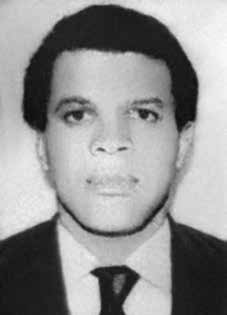

Marcos
Antônio
da Silva
Lima
CIRCUNSTÂNCIAS DA MORTE
Marcos Antônio da Silva Lima morreu no dia 14 de janeiro de 1970, após ter sido atingido por disparo de arma de fogo durante uma operação policial realizada em um apartamento que funcionava como aparelho do PCBR, localizado na Rua Inhangá, no 27, em Copacabana, no Rio de Janeiro. A ação foi organizada pela Polícia do Exército da 1ª Região Militar, e contou com o apoio do Departamento de Ordem Política e Social do Estado da Guanabara (DOPS/GB). Segundo relato de Ângela Camargo Seixas, ex-militante do PCBR que presenciou a morte de Marcos Antônio, na noite do dia 13 de janeiro, em razão da queda de vários companheiros do partido, os dois decidiram se dirigir ao apartamento de Ângela por acreditarem ser um local seguro. Entretanto, foram recebidos por dois policiais que se encontravam no interior do apartamento e que imediatamente começaram a atirar contra os dois. Ambos tentaram correr pelas escadas do prédio, mas foram atingidos pelos disparos dos policiais. Ângela perdeu momentaneamente a consciência e, quando acordou, avistou Marcos Antônio ferido, aparentando já estar morto. Tentou sair do prédio, mas foi presa. Ferido por um tiro na cabeça, Marcos Antônio foi levado para o Hospital Souza Aguiar, onde faleceu minutos depois. De acordo com a versão oficial divulgada à época dos fatos pelos órgãos do Estado, Marcos Antônio teria sido atingido em um confronto armado com agentes militares. A nota emitida pela 1ª Região Militar uma semana depois do ocorrido afirmava que ao receber voz de prisão, Marcos Antônio teria puxado sua arma e trocado tiros com a polícia. Ângela Camargo Seixas esclareceu amplamente os fatos, afirmando em seu testemunho que, apesar de armado, Antônio Marcos estava totalmente desprevenido ao chegar ao local, e não empunhava a arma, levando apenas a chave do apartamento em sua mão. Ângela esclareceu também que em nenhum momento foi dada oportunidade a eles de se entregarem à polícia, que já os recebeu com tiros. Do ponto de vista da CEMDP, a soma de alguns elementos, tais como a declaração de Ângela, o contexto da repressão na qual o caso se insere, a ausência de laudo de perícia de local – procedimento padrão que deveria ter sido seguido – e a ausência de resposta das autoridades militares – que se recusaram a enviar a documentação solicitada –, corroboram para a desconstrução da versão oficial dos fatos. O corpo de Antônio Marcos deu entrada no Instituto Médico-Legal (IML) como desconhecido. Sua esposa chegou a receber a notícia da morte por telefone, mas foi orientada a aguardar a divulgação do fato pelos órgãos oficiais, o que se deu uma semana após o ocorrido. O corpo só pôde ser retirado do IML pela família no dia 20 de janeiro. O laudo de necropsia foi assinado pelo legista Nilo Ramos Assis, que definiu como causa mortis “ferida transfixante do crânio com destruição parcial do encéfalo”. Os restos mortais de Marcos Antônio da Silva foram enterrados no cemitério de Inhaúma, no Rio de Janeiro (RJ).
Marcos Antônio da Silva Lima died on January 14, 1970, after being hit by a gunshot during a police operation carried out in an apartment that operated as a PCBR unit, located at Rua Inhangá, no. 27, in Copacabana, Rio de Janeiro. The action was organized by the Army Police of the 1st Military Region, and had the support of the Department of Political and Social Order of the State of Guanabara (DOPS/GB). According to a report by Ângela Camargo Seixas, a former PCBR activist who witnessed the death of Marcos Antônio, on the night of January 13th, due to the fall of several party comrades, the two decided to go to Ângela's apartment as they believed it to be a safe place. However, they were met by two police officers who were inside the apartment and who immediately began shooting at the two. Both tried to run up the stairs of the building, but were hit by police fire. Ângela momentarily lost consciousness and, when she woke up, she saw Marcos Antônio injured, appearing to be already dead. She tried to leave the building, but was arrested. Wounded by a gunshot to the head, Marcos Antônio was taken to Souza Aguiar Hospital, where he died minutes later. According to the official version released at the time of the events by State bodies, Marcos Antônio was allegedly shot in an armed confrontation with military agents. The note issued by the 1st Military Region a week after the incident stated that upon being arrested, Marcos Antônio had pulled out his gun and exchanged shots with the police. Ângela Camargo Seixas clarified the facts amply, stating in her testimony that, despite being armed, Antônio Marcos was completely unprepared when he arrived at the scene, and was not holding a weapon, only carrying the apartment key in his hand. Ângela also clarified that at no point were they given the opportunity to hand themselves over to the police, who already greeted them with gunfire. From CEMDP's point of view, the sum of some elements, such as Ângela's statement, the context of the repression in which the case is inserted, the absence of a local expert report – a standard procedure that should have been followed – and the lack of response from the military authorities – who refused to send the requested documentation –, corroborate the deconstruction of the official version of the facts. Antônio Marcos' body was admitted to the Legal Medical Institute (IML) as unknown. His wife received news of the death over the phone, but was advised to wait for official bodies to announce the fact, which happened a week after the incident. The body could only be removed from the IML by the family on January 20th. The autopsy report was signed by coroner Nilo Ramos Assis, who defined the cause of death as “transfixing wound to the skull with partial destruction of the brain”. The remains of Marcos Antônio da Silva were buried in the Inhaúma cemetery, in Rio de Janeiro (RJ).
Marcos Antônio da Silva Lima murió el 14 de enero de 1970, tras ser alcanzado por un disparo durante un operativo policial realizado en un apartamento que funcionaba como unidad PCBR, ubicado en Rua Inhangá, no. 27, en Copacabana, Río de Janeiro. La acción fue organizada por la Policía Militar de la 1ª Región Militar, y contó con el apoyo del Departamento de Orden Político y Social del Estado de Guanabara (DOPS/GB). Según relato de Ângela Camargo Seixas, ex militante del PCBR que presenció la muerte de Marcos Antônio, la noche del 13 de enero, debido a la caída de varios compañeros del partido, los dos decidieron ir al departamento de Ângela, porque creían que era un lugar seguro. Sin embargo, fueron recibidos por dos policías que se encontraban dentro del apartamento y que inmediatamente comenzaron a disparar contra los dos. Ambos intentaron subir corriendo las escaleras del edificio, pero fueron alcanzados por fuego policial. Ângela perdió momentáneamente el conocimiento y, cuando despertó, vio a Marcos Antônio herido, que parecía ya muerto. Intentó salir del edificio, pero fue arrestada. Herido de un disparo en la cabeza, Marcos Antônio fue trasladado al Hospital Souza Aguiar, donde falleció minutos después. Según la versión oficial difundida en el momento de los hechos por órganos del Estado, Marcos Antônio habría sido baleado en un enfrentamiento armado con agentes militares. La nota emitida por la 1ª Región Militar una semana después del incidente afirmaba que, al ser detenido, Marcos Antônio sacó su arma e intercambió disparos con la policía. Ângela Camargo Seixas aclaró ampliamente los hechos, afirmando en su testimonio que, a pesar de estar armado, Antônio Marcos llegó al lugar de los hechos sin ninguna preparación y no portaba ningún arma, sino que sólo llevaba la llave del apartamento en la mano. Ângela también aclaró que en ningún momento les dieron la oportunidad de entregarse a la policía, quienes ya los recibieron a tiros. Desde el punto de vista del CEMDP, la suma de algunos elementos, como la declaración de Ângela, el contexto de represión en el que se inserta el caso, la ausencia de un peritaje local – procedimiento estándar que debería haber sido seguido – y la falta de respuesta de las autoridades militares – que se negaron a enviar la documentación solicitada –, corroboran la deconstrucción de la versión oficial de los hechos. El cuerpo de Antônio Marcos fue internado en el Instituto Médico Legal (IML) en calidad de desconocido. Su esposa recibió la noticia del fallecimiento por teléfono, pero le aconsejaron esperar a que los organismos oficiales anunciaran el hecho, que ocurrió una semana después del incidente. La familia sólo pudo sacar el cuerpo del IML el 20 de enero. El informe de la autopsia fue firmado por el médico forense Nilo Ramos Assis, quien definió la causa de la muerte como “herida traspasante en el cráneo con destrucción parcial del cerebro”. Los restos de Marcos Antônio da Silva fueron enterrados en el cementerio de Inhaúma, en Río de Janeiro (RJ).